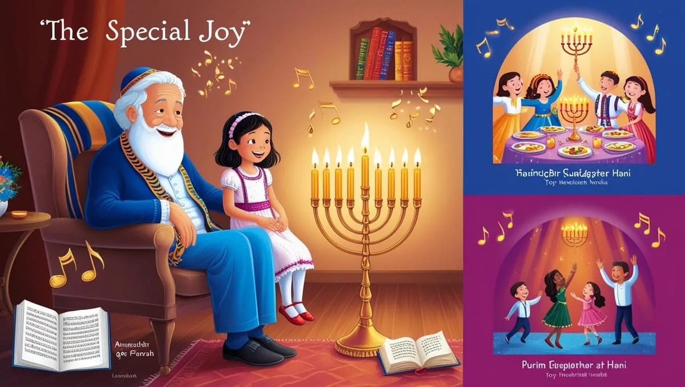

במארג העשיר של המצוות והמנהגים ביהדות, מעטות הן המצוות הטומנות בחובן רבדים כה עמוקים של משמעות כמו הדלקת נרות חנוכה. חיבור זה מבקש להאיר את המשמעות העמוקה של מצווה אהובה זו, תוך חקירת היותה מופת להבנת מערכת היחסים שבין אהבת ה' והכרת הטוב האנושית. באמצעות ניתוח מעמיק של מקורות חז"ל וההגות היהודית לדורותיה, נגלה כיצד המאפיינים הייחודיים של מצוות נר חנוכה משקפים עקרונות יסוד של המחשבה היהודית בנוגע לעבודת ה', הכרת הטוב והשאיפה למצוינות רוחנית.
אור ההודיה: עיון מעמיק במהות נר חנוכה ואהבת ה'
פרק א: ייחודיות דין המהדרין בחנוכה
א.1 תופעה יוצאת דופן: רמות ההידור
מצוות הדלקת נר חנוכה מציגה בפנינו תופעה יוצאת דופן בהלכה: קביעת רמות מובנות ומוגדרות של קיום המצווה. התלמוד מפרט שלוש דרגות נבדלות:
- החיוב הבסיסי - "נר איש וביתו"
- מנהג המהדרין - נר לכל אחד ואחד
- מהדרין מן המהדרין - מוסיף והולך (או פוחת והולך לשיטת בית שמאי)
מבנה היררכי זה עומד בניגוד בולט למצוות אחרות, שבהן לא מצאנו דרגות מוגדרות כאלה. לא מצאנו בתלמוד דיון דומה לגבי רמות שונות של אכילת מצה בפסח או דרגות שונות של ישיבה בסוכה. ייחודיות זו של חנוכה מחייבת התבוננות מעמיקה.
א.2 טיבו המיוחד של ההידור בנר חנוכה
ההידור בנר חנוכה שונה באופן מהותי מהידור במצוות אחרות. ניתן למנות מספר מאפיינים ייחודיים:
- הטמעה בגוף התקנה: ההידור איננו תוספת חיצונית אלא חלק אינטגרלי מעצם תקנת חכמים. המחלוקת בין בית שמאי ובית הלל בעניין אופן קיום מהדרין מן המהדרין מעידה שרמות אלו היו חלק מהותי מעצם תקנת המצווה.
- הכפלת מעשה המצווה: בשונה מהידורים אחרים המתמקדים בשיפור איכות קיום המצווה, כאן ההידור מתבטא בריבוי כמותי של עצם מעשה המצווה.
- אפשרות ברכה: חלק מהפוסקים, ובראשם הפרי חדש והאדרת, סוברים שניתן לברך על הידור זה - עמדה חסרת תקדים בהקשר של הידור מצווה.
פרק ב: מהות אורות החנוכה
ב.1 מעבר לזיכרון: תכלית הנרות
בחינה מעמיקה של מהות נרות חנוכה מגלה הבדל מהותי בינם לבין מצוות זיכרון אחרות. בעוד שמצוות כמו אכילת מצה או ישיבה בסוכה משמשות בעיקר כאמצעי לזכירת האירועים ההיסטוריים, נרות חנוכה ממלאים תפקיד עמוק יותר: הם משמשים כזרז להתעוררות של הודיה ושבח.
הגאון רבי שלמה זלמן אוירבך זצ"ל הסביר הבחנה יסודית זו, באומרו שבשונה ממצוות זיכרון אחרות, מטרתם העיקרית של נרות חנוכה היא לעורר בנו רוח של הודיה ושבח לקב"ה. הבנה זו מאירה היבטים רבים וייחודיים של המצווה.
ב.2 ביטויים מעשיים למהות ההודיה
מהות זו של הודיה באה לידי ביטוי במספר היבטים הלכתיים ומנהגיים:
- מנהג השירה: המנהג הנפוץ לשיר שירי הודיה לאחר ההדלקה - מנהג שאין לו מקבילה במצוות אחרות - משקף את המטרה היסודית הזו.
- דין כבתה: העיקרון ש"כבתה אין זקוק לה" מובן לאור התפיסה שהמטרה העיקרית היא עצם ההתעוררות להודיה, ולא קיום מתמשך של תצוגה חזותית.
- חיוב נשים: הכללת נשים במצווה זו, למרות היותה מצוות עשה שהזמן גרמא, משקפת את מהותה כביטוי של הודיה על הצלת הכלל.
פרק ג: אנטומיה של הודיה
ג.1 הודיה אמיתית כהכרה באהבה
תפיסת ההודיה במחשבה היהודית חורגת מעבר להכרה פשוטה בטובה שקיבלנו. הודאה אמיתית כוללת הכרה עמוקה בטוב הפנימי של המיטיב. כאשר אנו מביעים הכרת טובה, אנו מצהירים על מודעותנו לא רק למה שקיבלנו, אלא גם לכוונה האוהבת שעמדה מאחורי הנתינה.
הבנה זו מעבירה את נקודת המבט שלנו על הודיה מפעולה טכנית של פירעון חוב להזדמנות לפיתוח והעמקת הקשר עם הבורא. בדומה למערכות יחסים אנושיות, הכרת טובה אמיתית מובילה לחיזוק הקשר הרגשי ולהעמקת האהבה.
ג.2 אי-תלותה של ההודיה בשליח
הדרישה להבעה אישית של הודיה, כפי שמתבטא בהלכות מודים דרבנן, חושפת אמת עמוקה על טבעה של הכרת הטוב. כשם שלא ניתן להאציל את הבעת האהבה לשליח, כך גם הודיה אמיתית חייבת לנבוע ישירות מלבו של המודה.
עיקרון זה מקבל ביטוי מרגש בסיפור על מרן הגרי"ש אלישיב זצ"ל, שהתעקש ללמוד לומר "תודה" באנגלית למנתח שלו. מעשה זה ממחיש שהודיה אמיתית, בהיותה ביטוי של אהבה, דורשת ביטוי אישי וישיר.
פרק ד: דרכו של הלב האוהב
ד.1 המעבר הטבעי מאהבה להידור
כאשר אנו מבינים שהודיה היא ביסודה ביטוי של אהבה, המבנה הייחודי של דרגות המהדרין בחנוכה מקבל משמעות עמוקה. מי שאוהב באמת מחפש באופן טבעי לבטא את אהבתו דרך מעשים נוספים, מעבר לדרישות הבסיסיות.
המסילת ישרים מאיר נקודה זו באומרו שמי שאוהב באמת לא יסתפק במילוי החובות המפורשות אלא יחפש להבין ולמלא את הרצון העמוק יותר של האהוב. התפתחות טבעית זו מאהבה להידור מסבירה מדוע דווקא במצוות חנוכה נקבע מוסד המהדרין כחלק אינטגרלי מהמצווה.
ד.2 השתקפות היסטורית: זכות ההידור
נס פך השמן עצמו התרחש בזכות רצונם של החשמונאים לקיים את המצווה בצורתה המהודרת ביותר. למרות שיכלו להסתמך על הכלל "טומאה הותרה בציבור", חיפושם אחר הידור המצווה מתוך אהבה זכה לתגובה אלוקית של אהבה מקבילה.
פרק ה: מקבילות בביטויי הודיה אחרים
ה.1 דפוס ההידור במצוות הודיה אחרות
הקשר בין הודיה והידור מתבטא גם בתחומים אחרים של העבודה היהודית:
- ביכורים: מוסד תוספת ביכורים ועיטור ביכורים משקף את הרצון הטבעי להדר בביטויי הודיה על ברכת הארץ.
- שירת הים: מקור הדין של הידור מצווה - "זה א-לי ואנווהו" - מופיע דווקא בהקשר של שבח והודיה על הישועה.
- ארבעת המינים: לפי הבנת הרמב"ם במשמעותם כביטוי הודיה על היבול, אנו מוצאים דגש מיוחד על הידור בהלכותיהם.
ה.2 ההדדיות של אהבה מוגברת
הדיון התלמודי בעניין התייחסותו המיוחדת של הקב"ה להידור ישראל בברכת המזון חושף עיקרון עמוק: כאשר אנו מבטאים אהבה דרך הידור וולונטרי במצוות, אנו זוכים לאהבה אלוקית הדדית המתבטאת בהתחשבות על-טבעית.
פרק ו: יישומים מעשיים
ו.1 טיפוח הידור מודע
ההבנה התיאורטית של הקשר בין הידור, הודיה ואהבה חייבת למצוא ביטוי מעשי בחיי הדת שלנו. זה כולל:
- קישור מודע: בעת ביצוע הידורים בכל מצווה, עלינו לקשר באופן מודע את מעשינו לרגשות האהבה והכרת הטוב כלפי הבורא.
- חיפוש הזדמנויות: חיפוש פעיל אחר דרכים להדר בקיום המצוות כביטוי של אהבה.
- שמירת פרספקטיבה: הבנה שההידור צריך לנבוע מרגש אמיתי ולא מביצוע חיצוני גרידא.
ו.2 כוחה המשנה של הודיה מועצמת
התרגול של הודיה מועצמת נושא פוטנציאל לשינוי אישי עמוק:
- העמקת החוויה הדתית: המעבר מקיום מכני למערכת יחסים מבוססת אהבה והודיה.
- טיפוח שמחה במצוות: מציאת עונג אמיתי בהליכה מעבר לדרישות הבסיסיות.
- פיתוח הקשר עם הבורא: בניית מערכת יחסים אינטימית יותר עם הקב"ה דרך ביטויי אהבה והודיה.
פרק ז: העומק הפנימי של ההידור
ז.1 מהידור חיצוני להידור פנימי
ההידור במצוות חנוכה מלמד אותנו על מושג עמוק יותר של הידור בעבודת ה'. כפי שמבאר המהר"ל מפראג, ההידור האמיתי אינו רק בצורה החיצונית של המצווה, אלא בעיקר במהות הפנימית של הקשר בין האדם לבוראו. הוא כותב:
"וההידור הזה אינו הידור חיצוני בלבד, כי אם הידור פנימי, שהוא מורה על השלמות הפנימית של האדם בעבודת ה' יתברך... כי המהדר במצוה מראה בזה כי המצוה חביבה עליו ביותר, והוא דבק בה בכל נפשו ומאודו."
ז.2 ההיבט החינוכי של ההידור
ההידור במצוות חנוכה נושא גם משמעות חינוכית עמוקה. כפי שמבאר הרב אליהו דסלר זצ"ל במכתב מאליהו:
- חינוך לאהבת ה': ההידור מחנך את האדם להתבונן באהבת ה' ולהשיב אהבה.
- פיתוח רגישות רוחנית: ההידור מפתח את היכולת לזהות ולהעריך דקויות בעבודת ה'.
- העמקת המודעות: ההידור מעמיק את המודעות למשמעות הפנימית של המצוות.
פרק ח: ההשפעה המעגלית של הודיה ואהבה
ח.1 מעגל ההשפעה ההדדית
הקשר בין הודיה, אהבה והידור יוצר מעגל השפעה חיובי:
- הודיה מולידה אהבה: ההכרה בטובת ה' מעוררת אהבה אליו.
- אהבה מובילה להידור: האהבה מעוררת רצון להדר במצוות.
- הידור מעמיק הודיה: ההידור במצוות מגביר את רגשות ההודיה.
ח.2 ההשפעה על החיים הרוחניים
מעגל זה משפיע על כל מערכת החיים הרוחניים:
- העמקת התפילה: הבנת עומק ההודיה משפיעה על איכות התפילה.
- שיפור קיום המצוות: האהבה המתפתחת משפרת את איכות קיום כל המצוות.
- העשרת החיים הרוחניים: המעגל כולו מעשיר את החיים הרוחניים.
פרק ט: מבט לעתיד - יישום והשלכות
ט.1 יישום בחיי היומיום
הלקחים העולים מהבנת מהות ההידור וההודיה בחנוכה ניתנים ליישום בחיי היומיום:
- התבוננות יומית: הקדשת זמן להתבונן בחסדי ה' ולהודות עליהם.
- חיפוש הזדמנויות להידור: זיהוי מצבים בהם ניתן להדר במצוות.
- פיתוח מודעות: העמקת המודעות לקשר שבין הודיה, אהבה והידור.
ט.2 השלכות לדורנו
המסר של חנוכה רלוונטי במיוחד לדורנו:
- התמודדות עם חומרנות: ההבנה שאושר אמיתי נובע מקשר רוחני עמוק.
- חיזוק הזהות היהודית: העמקת ההבנה במשמעות המצוות והקשר עם ה'.
- בניית חיים משמעותיים: יצירת חיים המבוססים על הודיה, אהבה והידור.
סיכום: אור של אהבה והודיה
המסע העמוק במהות נר חנוכה חושף בפנינו תובנות יסודיות על טבע הקשר בין האדם לבוראו. הבנת המערכת המורכבת של הודיה, אהבה והידור מאפשרת לנו לבנות חיים רוחניים עשירים יותר, מלאי משמעות ועומק.
נרות החנוכה מאירים לנו את הדרך להתעלות רוחנית דרך:
- הבנת עומק ההודיה
- טיפוח האהבה לה'
- הידור במצוות מתוך אהבה
כפי שהנרות מוסיפים והולכים, כך גם אנו יכולים להוסיף ולהעמיק את הקשר שלנו עם הבורא, יום אחר יום, שנה אחר שנה, מתוך הודיה, אהבה והידור.
נספח: מקורות והרחבות
א. מקורות תלמודיים
- סוגיית הגמרא במסכת שבת כא ע"ב
- סוגיית מודים דרבנן במסכת סוטה מ ע"א
- דיני הידור מצווה בבבא קמא ט ע"ב
ב. מקורות ראשונים
- רמב"ם הלכות חנוכה
- תוספות על סוגיית מהדרין
- ריטב"א על דיני הידור
ג. מקורות אחרונים והגות
- מכתב מאליהו
- שפת אמת על חנוכה
- מנחת שלמה לרש"ז אוירבך
ד. ציוני דרך להעמקה נוספת
- סוגיות נוספות בעניין הידור מצווה
- מקורות נוספים בעניין הודיה
- דיונים הלכתיים בענייני מהדרין